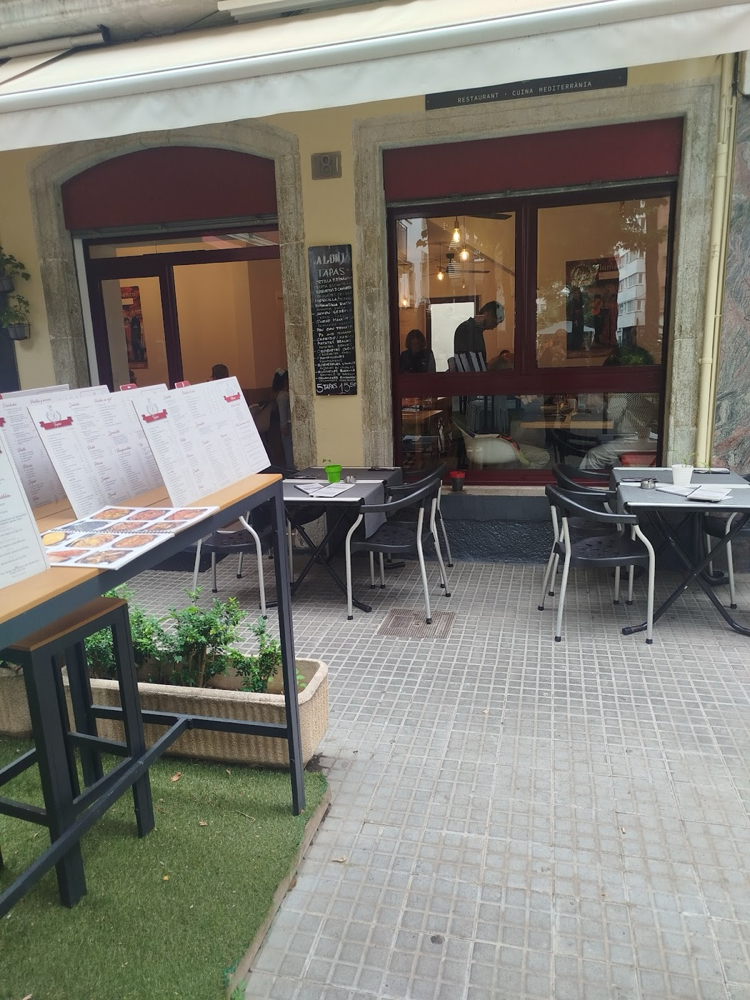
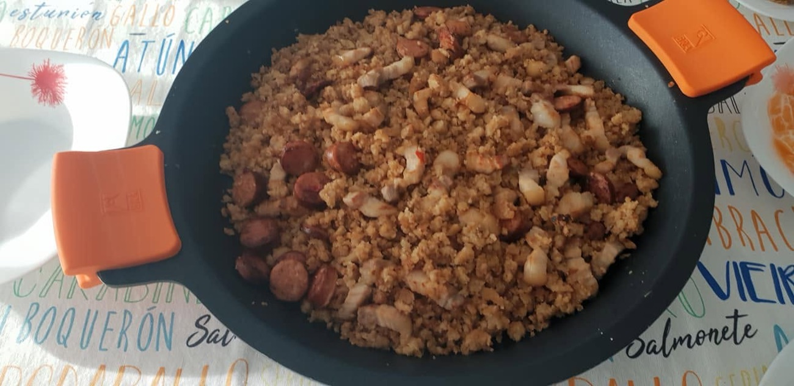
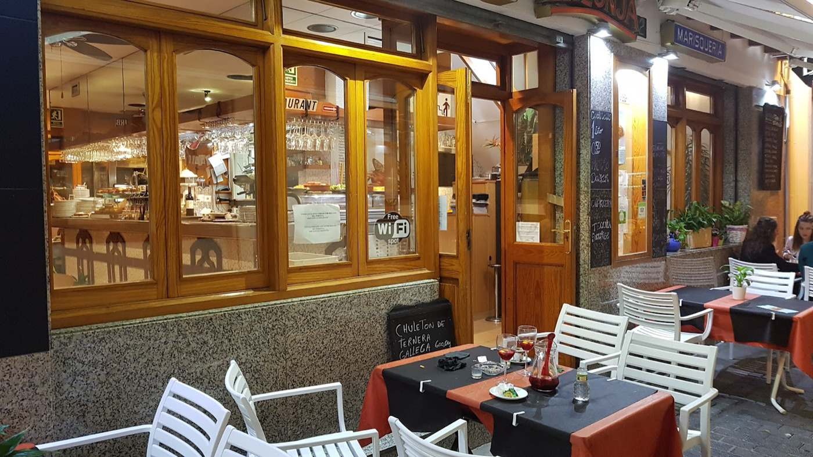

Marisquería y tapas · Lloret de Mar
La Lonja
Arroces, mariscadas y tapas en el Carrer de Sant Tomàs. De mediodía a medianoche, todos los días.
Lote01Paella de marisco con cigalas
El nombre
En una lonja, el pescado se subasta al llegar a puerto. Aquí, llega a la mesa.
Un restaurante acogedor, en una calle tranquila a dos pasos del centro, con una terraza interior y una carta de mar: paellas y arroces, mariscadas, pescado y tapas de toda la vida.


- 4,4en Google · 3.405 reseñas
- 98%lo recomienda en Facebook
- 12habierto cada día, de 12:00 a 24:00
Interactivo · menú del día
¿No sabes qué pedir? Que decida la subasta.
Como en el reloj de una lonja, las luces corren y el precio baja. Pulsa «¡Me lo quedo!» y la subasta te adjudica un primero y un segundo del menú del día. También puedes tocar un plato del reloj para elegirlo tú.
La Lonja · Lloret de Mar
Lote nº —
- Primero
- Pulsa «¡Subasta!»
- Segundo
- …o elige en el reloj
- Incluye
- Postre casero, pan y 1 bebida
Adjudicado por25,90 €
Menú del día según la pizarra de la puerta: los platos pueden cambiar. El arroz meloso se prepara para un mínimo de 2 personas.
La Lonja
Tapas
5 tapas 15,50 €
Toca cinco tapas de la pizarra y móntate la bandeja. Toca una cazuelita para quitarla.
0 / 5
Elige tus tapas
Fotos de Facebook y de nuestros clientes
Del mar a la mesa
Según las reseñas de Google
Lo que más se comenta
Los temas que Google detecta en las 3.405 reseñas de La Lonja, con el número de reseñas que los mencionan.
«Optamos por el menú y fue todo un acierto. Pedimos el arroz caldoso con almejas y sepia y estaba espectacular: en su punto y con mucho sabor.»
Reseña en Google
«Tapas excelentes, acogida y servicio de diez. Os recomiendo la paella negra, una maravilla.»
Isabelle · Facebook (traducido del francés)
«Comimos el menú del sábado y quedamos muy contentos. El servicio, muy correcto, amable y servicial.»
Reseña en Google
«¡Parrillada muy buena! Atención excelente.»
Adriana · Local Guide
Visita
Carrer de Sant Tomàs, 11
Consultando horario…
- Lunes12:00 – 24:00
- Martes12:00 – 24:00
- Miércoles12:00 – 24:00
- Jueves12:00 – 24:00
- Viernes12:00 – 24:00
- Sábado12:00 – 24:00
- Domingo12:00 – 24:00
En invierno suele cerrar unas semanas; la vuelta de temporada se anuncia en su Facebook.
Carrer de Sant Tomàs, 11 · 17310 Lloret de Mar 972 36 74 99 · mejor reservar La Lonja Lloret de Mar